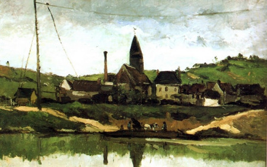

Cesto de manzanas

Autor: Paul Cezanne
Estilo: Impresionismo
Género: Naturaleza muerta
Título original: Basket of Apples
Título (inglés): Basket of Apples
Tipo: Cuadro
Técnica: Óleo
Soporte: Tela
Año: 1893
Se encuentra en: Instituto de Arte de Chicago, Chicago, Estados Unidos
Esta obra muestra una canasta grande se inclina, permitiendo que muchas de las naranjas y manzanas rueden sobre la mesa.
El artista eligió firmar esta pieza que es relativamente rara en su carrera, subrayando la satisfacción que sintió una vez que se completó alrededor de 1893.
La Montagne Saint Victoire Barnes

Autor: Paul Cezanne
Estilo: Impresionismo
Género: Naturaleza
Título original: La Montagne Saint Victoire Barnes
Título (inglés): La Montagne Saint Victoire Barnes
Tipo: Cuadro
Técnica: Óleo
Soporte: Tela
Año: 1895
Se encuentra en: Barnes Foundation, Estados Unidos
La obra no muestra únicamente la montaña, sino que con frecuencia también representa varios otros objetos, como árboles, casas y áreas agrícolas
También se representan una serie de objetos en primer plano que son tanto naturales como hechos por el hombre; por ejemplo, los árboles y las colinas más pequeñas al frente de la montaña más grande, y los edificios que se pueden ver repartidos por el paisaje.
Vista de Bonnieres

Autor: Paul Cezanne
Estilo: Impresionismo
Genero: Romanticismo
Tema: Escenas
Título original: Vue de Bonnières
Título (inglés): View of Bonnieres
Tipo: Cuadro
Técnica: Óleo
Soporte: Lienzo
Año: 1866
Se encuentra en: Museo Fabre, Montpellier
La obra muestra un paisaje el cual en la parte de atras se encuentran una pareja de novios charlando.